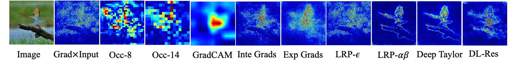
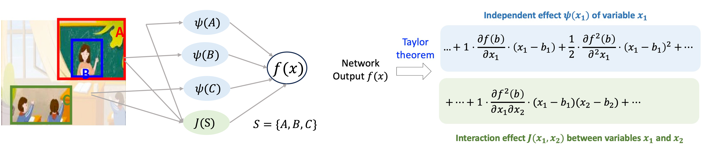
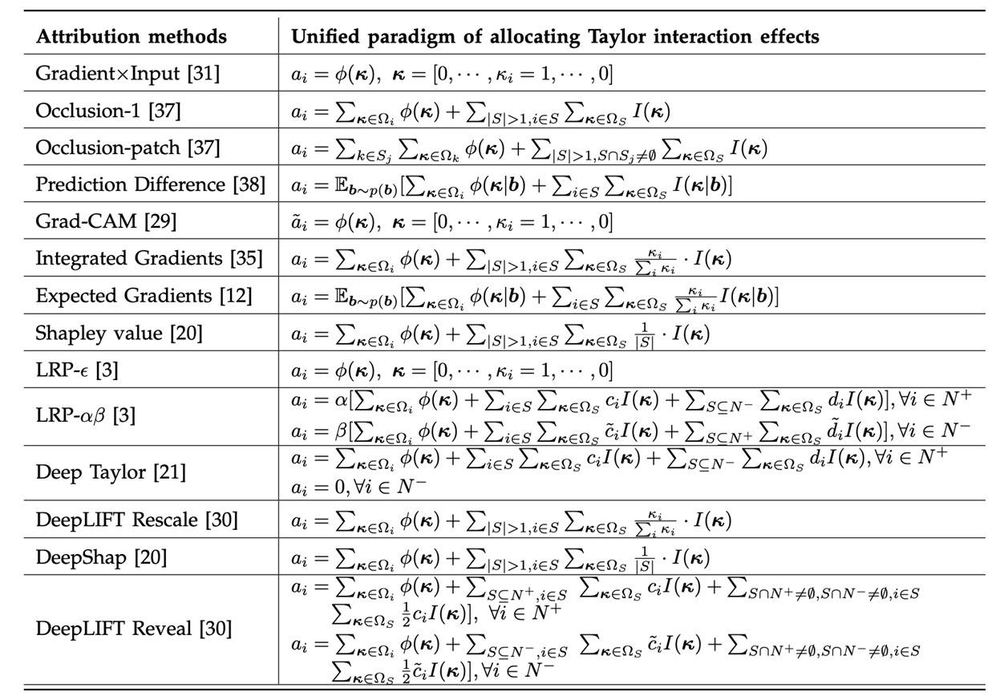
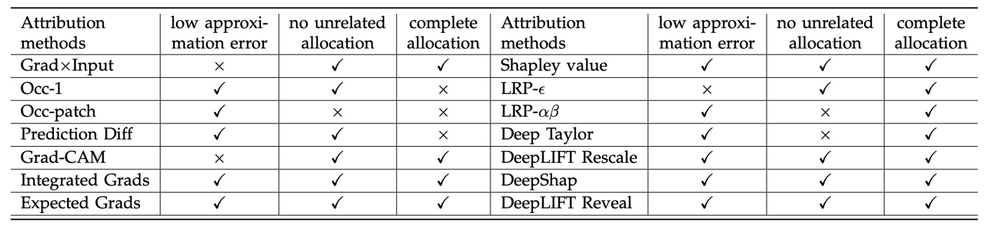

Abstract
Although numerous attribution methods have been proposed in recent years, most of them are built upon different heuristics, lacking a unified theoretical foundation. To this end, in this work,
1. We propose a unified attribution framework from the interaction perspective, which unifies 14 mainstream attribution methods. This unified framework reveals the (common) mechanism of these different attribution methods, i.e., the fourteen attribution methods can all be represented as a weighted allocation of the interaction effects between input variables. The essential difference between different methods lies in the different weights of allocating interaction effects.
2. Based on the unified framework, we propose three fundamental principles as a sanity check evaluation for the faithfulness of an attribution method, which uniformly compares different attribution methods

Figure 1. Attribution maps generated by different attribution methods, which are built upon different heuristics.
Preliminary: Interactions and Interaction Effects
In fact, the DNN inference does not treat each individual input variables independently, but also usually encodes the interaction relationship among input variables, which causes a numerical effect on the network output (called interaction effects). As shown in Figure 2 (left), beyond the independent effect of each object, the collaboration of the three objects {blackboard, teacher, student} makes an interaction effect $J(S)$ on the output $Y$, and the interaction effect increases the classification confidence by $J(S)$.
We prove that the network output can be precisely decomposed as the sum of independent effects $\psi(j)$ of all input variables ($j \in N$) and interaction effects $J(S)$ of all potential subsets $S$ of input variables ($S \subseteq N$).
$$f(x) = f(b) + \sum_{j \in N} \psi(j) + \sum_{S \subseteq N, |S|>1}J(S)$$

Figure 2. (left) An intuitive illustration of interaction effects in DNN inference. (right) Taking the second-order Taylor expansion as an example, the network output can be decomposed into independent effects of each input variable and interaction effects between input variables.
Unifying Fourteen Post-hoc Attribution Methods with Interaction Effects
We propose a unified attribution framework, which formulates the attribution score $a_i$ of each specific input variable $x_i$ as a weighted allocation from all independent effects and all interaction effects to the variable $x_i$, i.e.,
$$a_i = \sum_{j \in N} w_{i,j} \ \psi(j) + \sum_{S \subseteq N, |S|>1} w_{i,S} \ J(S)$$
where $w_{i,j}$ denotes the ratio of $j$’s independent effect being allocated to the attribution score of the variable $i$, and $w_{i,S}$ denotes the ratio of the interaction effect $J(S)$ being allocated to the attribution score of variable $i$.
We prove that each of 14 existing attribution methods, which is designed on different heuristics, can be uniformly explained as a specific allocation of independent effects and interaction effects, w.r.t. the weights $\{w_{i,S}\}, \{w_{i,j}\}$, as shown in Table 1.
These 14 unified methods have covered many different types of attribution methods that are designed based on fully different heuristics, including gradient-based attribution methods (Gradient*Input, Grad-CAM, Integrated Gradients, and Expected Gradients), back-propagation attribution methods (LRP-$\epsilon$, LRP-$\alpha\beta$, Deep Taylor, DeepLIFT Rescale, DeepLIFT RevealCancel, and DeepShap), and perturbation/occlusion-based attribution methods (Occlusion-1, Occlusion-patch, Prediction Difference, and Shapley value). We believe that a unified framework that covers various types of attribution methods is more likely to reflect the essential mechanism in generating attributions.

Table 1. Fourteen attribution methods are unified into the same paradigm of allocating interaction effects.
(Note that the notation $\phi(\kappa)$ and $I(\kappa)$ refer to the Taylor independent effect and Taylor interaction effect, which are the subdivisions of the above independent effect $\psi(j)$ and interaction effect $J(S)$ respectively)
Developing theoretical principles to evaluate attribution methods
Based on the unified framework, we develop three theoretical principles that a faithful attribution explanation is supposed to follow (Please refer to our paper [1] for a formalized description of these principles):
1. Low approximation error, i.e., faithful attributions are expected to cover almost all independent effects and all interaction effects of the DNN, and leave an ignorable residual term $\epsilon_K$ not been explained.
2. Avoiding allocation to unrelated variables, i.e., the independent effect $\psi(i)$ of each specific input variable $i$ is supposed to be allocated only to the variable $i$, rather than being allocated to other variables.
$$\forall j \in N \ \& \ j \neq i, \quad w_{j,i} = 0$$
Besides, each interaction effect among variables in a specific subset $S$ is supposed to exclusively be allocated to variables in $S$, without being allocated to any other unrelated variables $j \notin S$.
$$\forall j \notin S, \quad w_{j,S}=0$$
3. Complete allocation, i.e., Each independent effect is supposed to completely be allocated to all variables. Also, each interaction effect should be completely allocated to all variables.
$$\forall j \in N, \quad \sum_{i \in N} w_{i,j} \cdot \psi(j) = \psi(j)$$
$$\forall S \subseteq N, \quad \sum_{i \in N} w_{i,S} \cdot J(S) = J(S)$$
These theoretical principles can be served as a sanity check evaluation of attribution methods. Then, we use these principles to evaluate the aforementioned 14 attribution methods. Table 2 shows that seven attribution methods do not satisfy all these basic principles.

Table 2. A summary of principles followed by each attribution method.
BibTeX
@ARTICLE{deng2024unifying,
author={Deng, Huiqi and Zou, Na and Du, Mengnan and Chen, Weifu and Feng, Guocan and Yang, Ziwei and Li, Zheyang and Zhang, Quanshi},
journal={IEEE Transactions on Pattern Analysis and Machine Intelligence},
title={Unifying Fourteen Post-Hoc Attribution Methods With Taylor Interactions},
year={2024},
volume={46},
number={7},
pages={4625-4640},
doi={10.1109/TPAMI.2024.3358410}
}